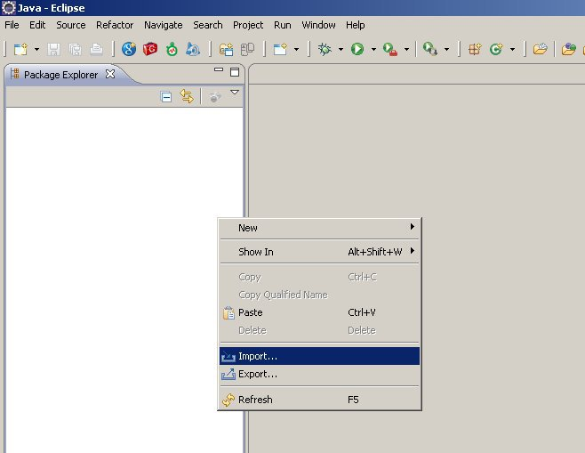
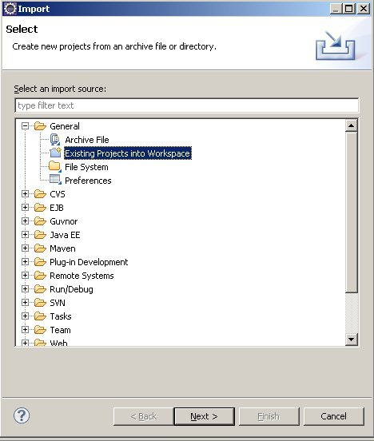
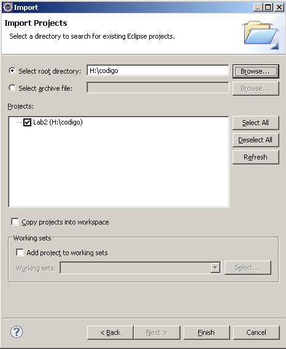

Importar um projecto
Com o botão direito sobre a área do package explorer seleccionar import

Seleccionar projecto existente para workspace (Existing Projects into workspace)

Escolher o root directory onde se encontra o projecto a importar
Seleccionar o projecto pretendido. Neste caso é o lab2

Concluir no botão finish
© Docentes de Sistemas Distribuídos,
Dep. Eng. Informática
,
Técnico Lisboa